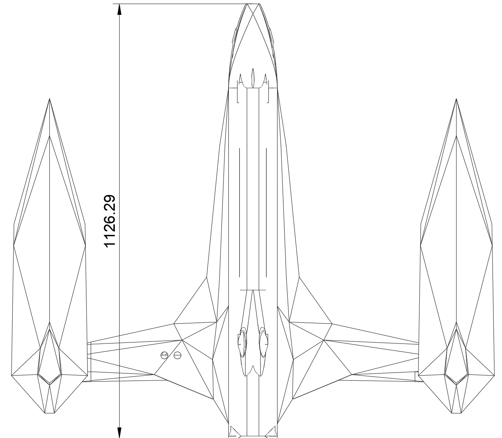
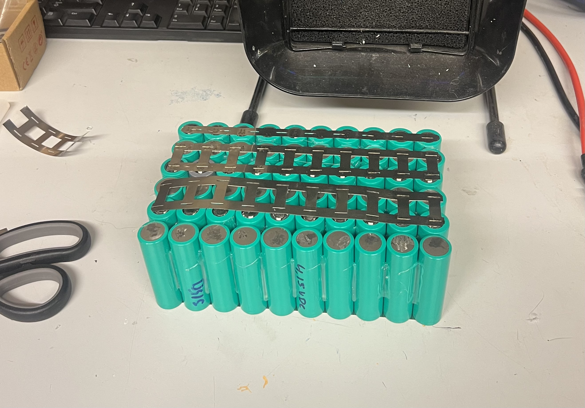
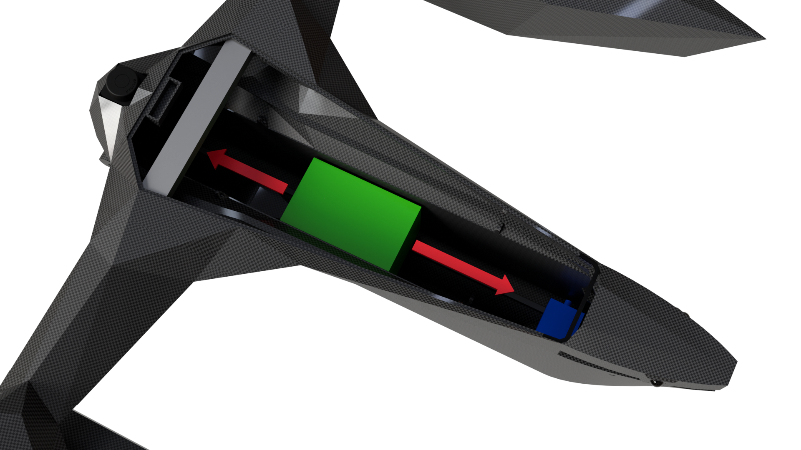
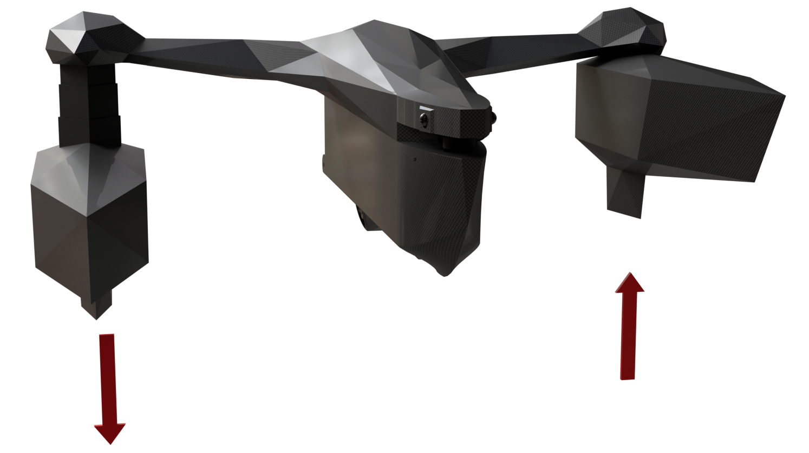
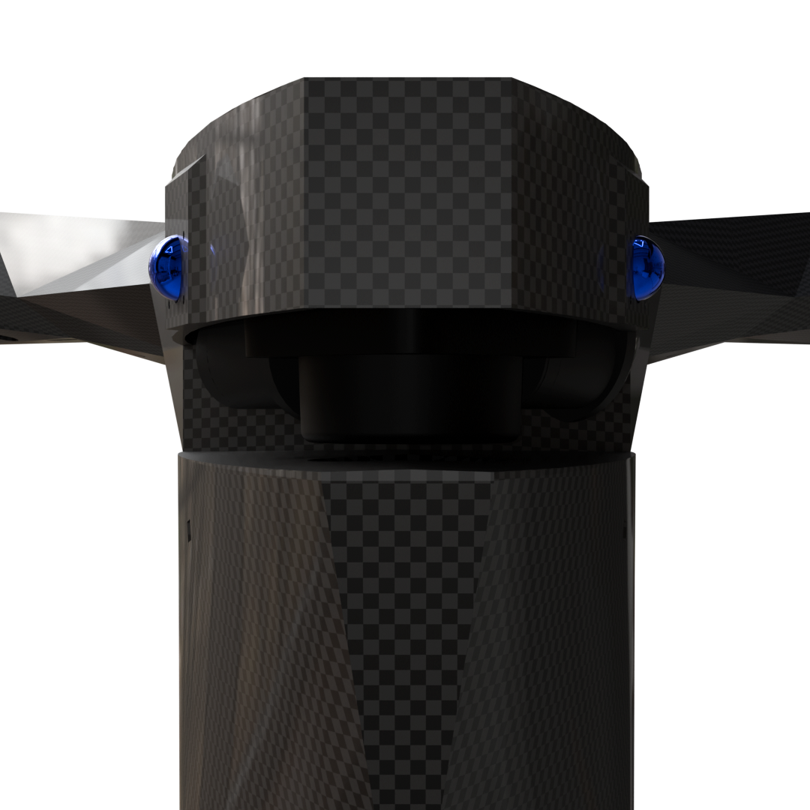
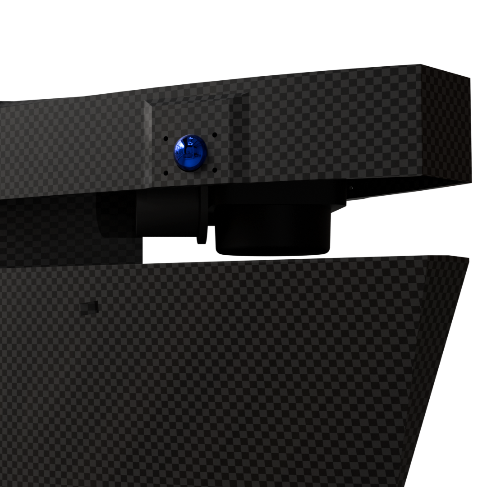
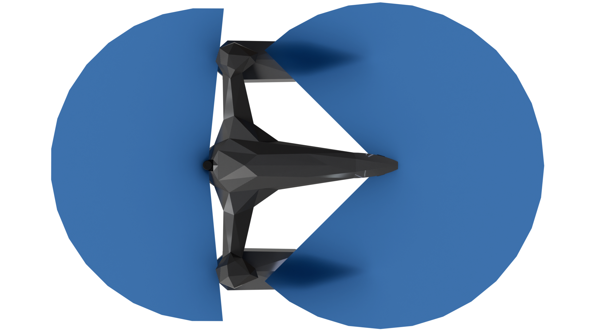
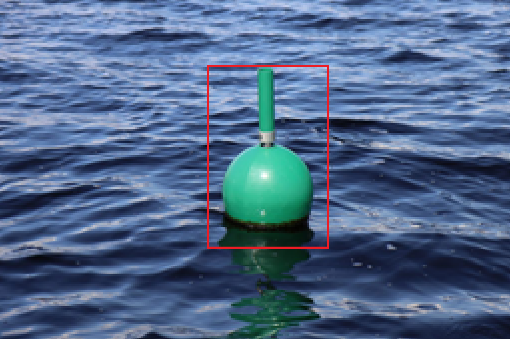
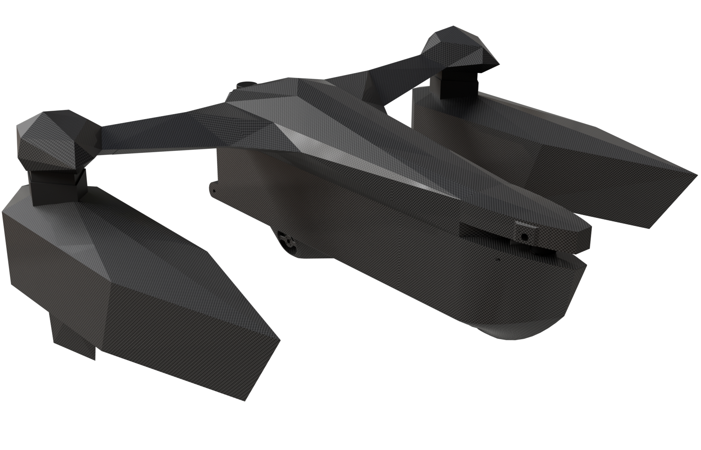

Ligmax, an autonomous boat
A custom boat designed from scratch. Hull, electronics, perception, and software. The goal is an autonomous-capable platform with full situational awareness: dual gimballed cameras, lidar, integrated battery pack, and onboard buoy detection. In progress throughout 2026.
What's on board
- Hull: Designed and modelled from scratch, with every component placed before fabrication.
- Perception: Lidar plus two cameras on independent gimbals. A buoy-detection CNN runs onboard for navigation reference.
- Power: Custom battery pack with active mass-balance, located to keep the centre of gravity low and trim controllable.
- Compute: Onboard SBC handling perception, control, and telemetry uplink.
Design imagery















Status
Mechanical design is locked. Electronics are bench-tested and integrating now. Perception models are training against a custom buoy dataset. On-water trials scheduled for later this year. This page will grow with the project, so check back.
Design document
Full design document (CAD overview, sensor stack, electrical, control):